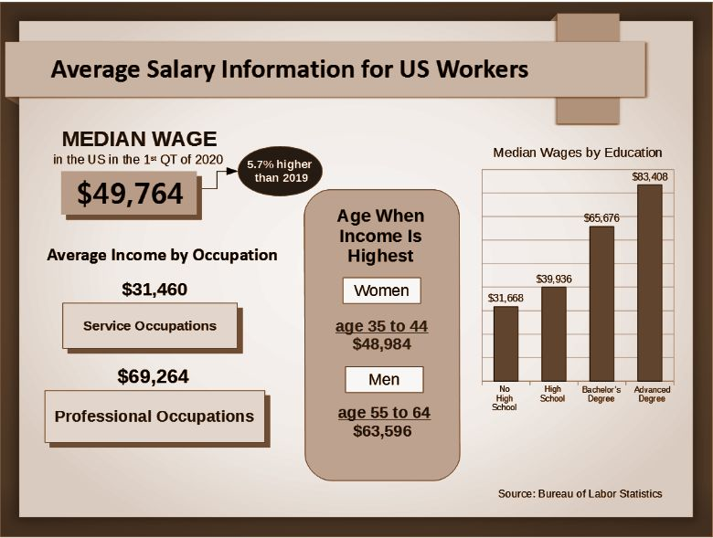

Your financial future depends on the choices you make today, but your present financial state was decided for you long ago.
Generally speaking, most financial advice offered to you about changing your financial future centers around three principles. The first is to spend less, the second, to save money, and the third, to invest your savings.
But the money you earn goes to keeping you and your family afloat. You live paycheck-to-paycheck. Lost in an endless loop. Going from home to work, work to home with no change in sight. And you continue to let it happen.
Let me guess. You live month to month, sometimes week to week and it’s normal to use credit cards to finance your lifestyle. How can you possibly, spend less, save money, and invest!
You’re not alone.
According to a 2017 report by CareerBuilder, 78 percent of US workers live paycheck to paycheck to make ends meet and nearly 3 in 4 workers say they are in debt today - more than half think they will always be.
And you think making more money is the answer? It’s not.
In the first quarter of 2020, the Bureau of Labor Statistics (BLS) reported the median wage for workers in the US was $957 per week or $49,764 per year for a 40-hour workweek. Wages were 5.7% higher than the previous year.

So many factors impact the value of the cash you earn, which has a direct impact on your present and future financial status. The value of your cash depreciates each day, no matter how much you make. Let me explain.
Do you know why banks were created? To make money. In other words, to make value for themselves by taking value from you. It’s simple, really.
You deposit your money in a bank and they pay you interest. The bank then takes your deposited money and lends it to another customer in the form of credit cards or loans.
According to Investopedia, the best rates nationally paid on savings deposits are roughly less than 2%. And according to the Federal Reserve Bank (the Fed), the February 2020 average credit card plan interest rate was 16.61% and a 24 month personal loan rate was 9.63%.
Now, you really won’t know your rate until you are actually approved, because your rate is based on the condition of your credit. So, if your credit is bad then you already know what I’m going to say.
The rate difference between what the banks pay you on your deposits versus what they charge you in credit cards and loans is the value the banks keep. And don’t forget the nickel and dime fees banks charge you to have an account with them or the minimum balances required.
And it’s not just people this happens to. Small businesses and corporations fall prey to this situation.
Now ask yourself, what happens when bank customers (people, small businesses and corporations) don't pay on credit lines or loans provided by banks? Bank customer defaults play another major role in the depreciation of your cash value, but we will get to that later.
Just remember that banks make value for themselves by taking value from you.
Speaking of the Federal Reserve Bank, do you understand how and why the Fed was created?
The basic plan for the Federal Reserve System was drafted at a secret meeting held in November of 1910 at the private resort of J.P. Morgan on Jekyll Island off the coast of Georgia. Those who attended represented the great financial institutions of Wall Street and, indirectly, Europe as well. The reason for secrecy was simple. Had it been known that rival factions of the banking community had joined together, the public would have been alerted to the possibility that the bankers were plotting an agreement in restraint of trade—which, of course, is exactly what they were doing. What emerged was a cartel agreement with five objectives: stop the growing competition from the nation's newer banks; obtain a franchise to create money out of nothing for the purpose of lending; get control of the reserves of all banks so that the more reckless ones would not be exposed to currency drains and bank runs; get the taxpayer to pick up the cartel's inevitable losses; and convince Congress that the purpose was to protect the public. It was realized that the bankers would have to become partners with the politicians and that the structure of the cartel would have to be a central bank. The record shows that the Fed has failed to achieve its stated objectives. That is because those were never its true goals. As a banking cartel, and in terms of the five objectives stated above, it has been an unqualified success (Page 23, Griffin, G. Edward. The Creature from Jekyll Island; A Second Look at the Federal Reserve. Third Edition., American Media, 1998.).
The Fed (America’s central bank) was eventually created on December 23, 1913 and is basically a legal private monopoly, a curator of the US money supply, operating for the benefit of a privileged few under the illusion of protecting and promoting the public interest.
Given the abilities and tools the Fed has at their disposal to counter inflation (a measure of the increase in prices and the fall in the purchasing value of money), they have the largest impact on the value of the cash you earn.
In effect, when the Fed “prints money” to counter inflation it adds credit to accounts of federal member banks and/or lowers the fed funds requirement (funds banks are required to hold in reserve each night) and/or the fed funds rate (the interest rate that banks charge each other for overnight loans). Both of these actions increase the money supply which devalues the cash you earn and reduces your purchasing power, but also makes borrowing money cheaper. So, bank customers (people, small businesses and corporations) take on more debt.
And therein lies the rub! Think about the ripple effect when bank customers (people, small businesses and corporations) default on credit lines and loans? Remember too big to fail?
In certain cases, federal loan guarantees are offered to large borrowers for national security reasons, to help companies that are deemed as essential industries, or in circumstances where the failure of a large company will harm the larger US economy.
In short, a federal loan guarantee is when the federal government covers defaulted loans.
At some point, US lawmakers were convinced that not providing support for this strategy would result in a negative impact to the economy and place an undue hardship on citizens of the US. And that’s when it happened. The burden of loan defaults was shifted from the banks to the US taxpayers.
And if you think the Fed is done, then you're sadly mistaken. They’ve been doing this to you since 1913. Why would they stop now?
As a recent example of the Fed flexing its muscle, on March 15, 2020 it lowered the federal funds rate (0 to 1/4 percent), on March 23, 2020 it set a minimum purchase of $500 billion in treasuries and $200 billion of mortgage backed securities, and finally on March 26, 2020 it reduced the bank reserve requirement to zero.
Inflation is an invisible tax on you created by the devaluation of your cash. It is the engine that continually sustains the loss in your cash value by shifting the burden of liability (bank and large corporation bailouts) to you from others spending failures (people, small businesses and corporations defaulting on lines of credit and loans).
And what about the intrusion of your personal privacy?
If you understand privacy in the US, then you know that privacy centers around the Fourth Amendment of the Constitution (our nation's laws). The Fourth Amendment states,
“The right of the people to be secure in their persons, houses, papers, and effects, against unreasonable searches and seizures, shall not be violated, and no Warrants shall issue, but upon probable cause, supported by Oath or affirmation, and particularly describing the place to be searched, and the persons or things to be seized.”
The everlasting goal of the Fourth Amendment is to protect your right to privacy and also to keep you free from unreasonable intrusions by the government.
But, your dependence on technology has guided you to trade your personal privacy for convenience. And you authorized it to happen!
There is an exception to the Fourth Amendment called the third-party doctrine. This legal doctrine states that individuals who voluntarily provide information to third parties, such as banks, phone companies, internet services providers, mobile payment service providers, email servers, etc. have “no reasonable expectation of privacy.”
Imagine the treatment of personal data captured by smart homes?
Each time you use any software developed application you willfully sign an End User License Agreements (a legal contract) which authorizes the developer or vendor to be able to capture personal information.
Remember, there is great value in your personal data and being able to capture your personal data allows those authorized third parties to monetize it and, in some cases, be required to provide your personal information to the government.
Certain reporting requirements that stem from both the Patriot Act and the Bank Secrecy Act, allow the government to obtain personal information from these third parties without having to comply with the Fourth Amendment.
For reference, Andrew Hinkes is an attorney with Carlton Fields and is nationally recognized for his experience in cryptocurrency and blockchain-related legal issues. He recently presented a lecture titled:
Enough is enough. Take control of your financial future and personal privacy.
The simple solution is to have an alternative. A new technology that favors you and not the banks, the Fed, or the developers and vendors. To help you keep the value of the cash you earn and the value of your personal data with you.
An anonymous and decentralized bank account that pays you interest, allows you to keep your earned cash value, and helps provide you to make a reasonable attempt to privatize your personal information to ultimately keep your Fourth Amendment rights enacted.
Discover the evolution of personal private banking and take back the value that’s been taken from you.